Gallery
~ Cast and Characters ~
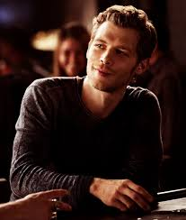
Joseph Morgan as Klaus Mikaelson: The self-proclaimed King of the French Quarter of New Orleans and the Original Hybrid: half-Original Vampire and half-werewolf. As the son of a witch and a werewolf alongside being a vampire by magic, Klaus is one of the most powerful and feared supernatural beings in history – he is over 1000 years old. He has a soft spot for his family, especially for Rebekah and Hope, his daughter with Hayley. He is the adoptive father of Marcel, his former protégé whom he saved from slavery. He eventually develops feelings for Cami, a bartender and psychology student. He and Elijah kill each other in the series finale to destroy the Hollow, an ancient spirit that was transferred from Hope's body to Elijah and Klaus's to protect Hope. The character is introduced in The Vampire Diaries season 2.
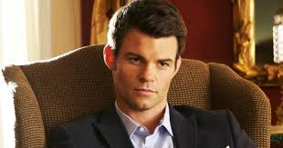
Daniel Gillies as Elijah Mikaelson: An Original Vampire and Klaus's older maternal half-brother. He is shown to be extremely suave, always sporting a suit and level-headed, compared to Klaus's more heated tendencies. He is also known as the "Noble Brother". He harbours romantic affections for Hayley, which she returns. In season 5 he portrays an alternate Elijah after being memory wiped at the end of season 4. He and Klaus kill each other in the series finale to destroy the Hollow, an ancient spirit that was transferred from Hope's body to Klaus's. The character is introduced in The Vampire Diaries season 2.
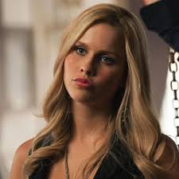
Claire Holt as Rebekah Mikaelson (season 1; special guest star seasons 2–5): An Original Vampire and Klaus's younger maternal half-sister. She is Klaus's favourite and the youngest of the Mikaelson siblings after the death of Henrik. At one time, she was in a secret, forbidden romantic relationship with Marcel. Despite her unwavering love for her family, she desires to find love and start a family of her own, which is complicated by her family name and vampire status. She eventually leaves New Orleans to pursue a simpler life outside of her family. Holt departs the main cast near the end of season 1 due to wanting to spend more times with her family but guest-starred sporadically in every season since. In the season 5 premiere, Marcel proposes to her, and in the series finale, she accepts. Klaus also ensures, before his death, that she can get the cure to make her human so she can have children and a human life with Marcel. Maisie Richardson-Sellers portrayed Rebekah during the second half of season 2 and one episode of season 3, when Rebekah possessed the witch Eva Sinclair's body. The character is introduced in The Vampire Diaries season 3.
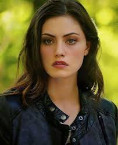
Phoebe Tonkin as Hayley Marshall: Originally a werewolf, later a hybrid, who conceived a daughter with Klaus named Hope, following a one night stand, creating the first ever tribrid – witch (from Klaus' mother) Vampire/hybrid (from Klaus) and werewolf (from Hayley and Klaus). She is revealed to be the long-lost Alpha of her werewolf bloodline. Later, she rises to become the Alpha of the entire Crescent pack when the Alphas of all the other bloodlines bow down before her. She is initially reluctant to be involved with the Mikaelsons, but is eventually accepted into the family and accepts them in return. She reciprocates Elijah's romantic feelings but marries Jackson Kenner to unite their packs. Her birth name, as revealed in season 1, is Andrea Labonair. She sacrifices herself to save Klaus and Hope in season 5 from the vampire Nazis. The character is introduced in The Vampire Diaries season 4.
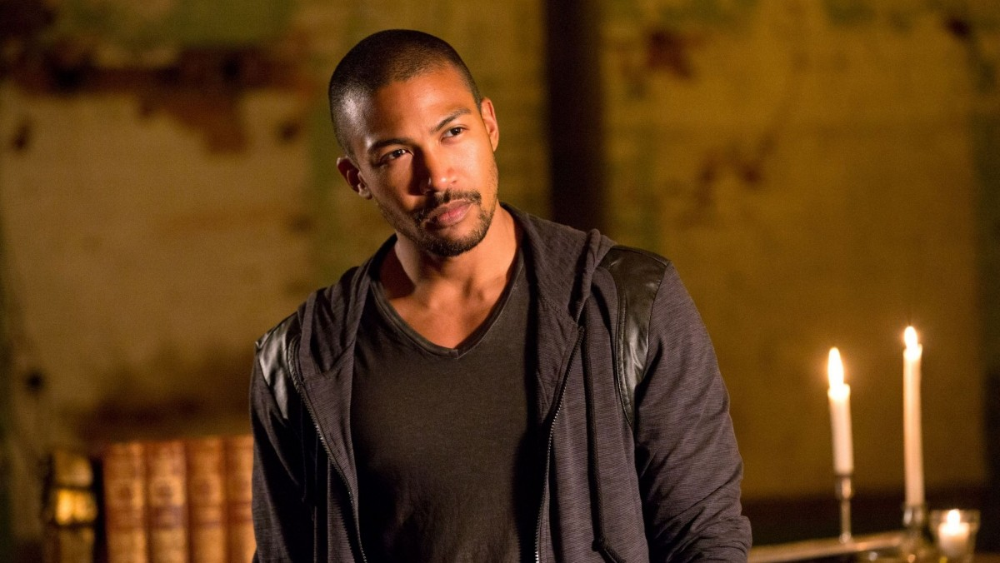
Charles Michael Davis as Marcel Gerard: A vampire and former slave. He was turned by Klaus, his adoptive father and former mentor. He has a romantic past with both Rebekah and Cami. His relationship with the Mikaelsons is complicated due to his history with them and philosophical differences. They are often adversarial as Klaus and Marcel constantly struggle for power over the French Quarter of New Orleans, but always care for one another. He rescues Davina from being sacrificed and takes her under his wing as his adoptive daughter, following the Klaus' example. Towards the end of the third season, Marcel is transformed into an Upgraded Original Vampire, a vampire far more powerful than the Originals themselves. In the season 5 premiere, he proposes to Rebekah, and in the series finale, she accepts. In Legacies, it is revealed they are now married. The character was introduced in The Vampire Diaries backdoor pilot.
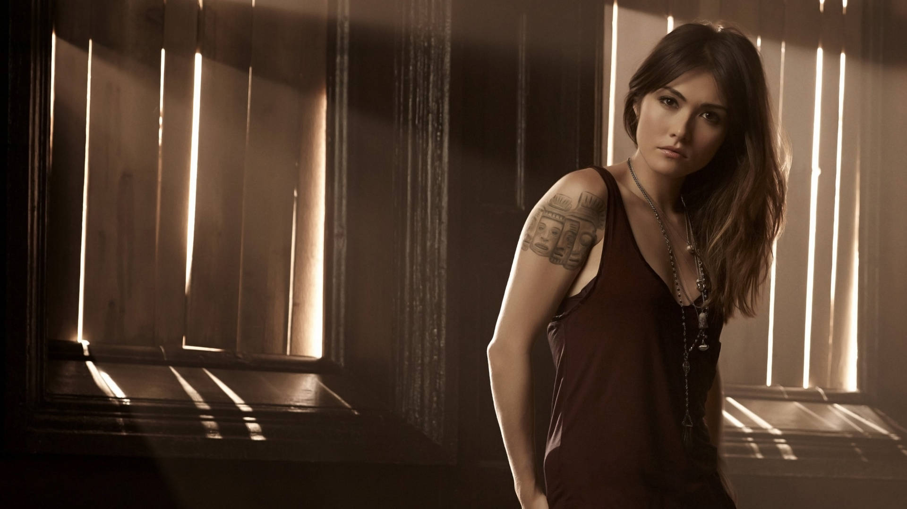
Daniella Pineda as Sophie Deveraux (season 1): A powerful witch of the French Quarter, Monique's aunt and Jane-Anne's sister. She is murdered by Monique in season 1 after Monique is resurrected as a result of the Harvest ritual. The character is introduced in The Vampire Diaries backdoor pilot.
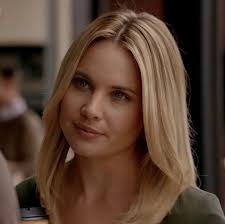
Leah Pipes as Cami O'Connell (seasons 1–3; special guest star seasons 4–5[6]): A human bartender with a psychology degree who acts as a therapist and eventually becomes romantically involved with Klaus Mikaelson. For decades, her family has helped protect the human locals of the French Quarter from all things supernatural. Before developing feelings for Klaus, Cami was in a relationship with Marcel. She becomes a vampire in season 3 and is bitten by the Upgraded Original Vampire Lucien Castle not long after; she dies as a result of his bite near the end of season 3. The character is introduced in The Vampire Diaries backdoor pilot.
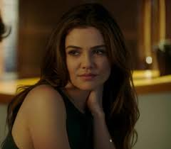
Danielle Campbell as Davina Claire (seasons 1–3; special guest star seasons 4–5[7]): A powerful young witch and Marcel's adoptive daughter who becomes Regent of all witch covens in New Orleans. She doesn't care much for the Mikaelsons and seeks to destroy them with Marcel's help. That is until she unknowingly falls in love with Kol Mikaelson, one of the Mikaelsons who was resurrected at the end of season 1 following his death in The Vampire Diaries season 4. She and Kol marry between seasons 4 and 5 and eventually settle down away from New Orleans.
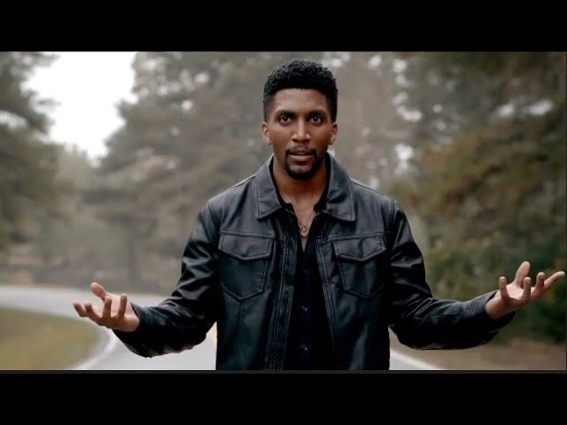
Yusuf Gatewood as Vincent Griffith (seasons 2–5; guest star season 1): A witch once possessed by Finn, the eldest brother among the Mikaelson siblings. He is the ex-husband of Eva Sinclair, the witch Rebekah possessed. He succeeds Davina as Regent of all witch covens in New Orleans. He fathers Keelin and Freya's son Nik in season 5. The character is introduced as Finn in his body in the season 1 final episode and as Vincent in season 2.
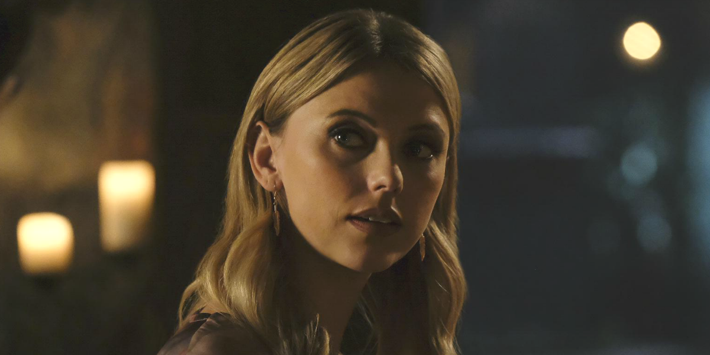
Riley Voelkel as Freya Mikaelson (seasons 3–5; recurring season 2): Klaus's long-lost maternal older half-sister and an immensely powerful and skilled thousand-year-old witch. She is the eldest of the Mikaelson siblings and returns to the Mikaelson family after breaking free from their Aunt Dahlia's control and immortality curse in season 2. She marries Keelin, a werewolf, in season 5; they have a son, Nik (named after Niklaus 'Klaus' Mikaelson – the name is revealed in Legacies), with Vincent Griffith being the surrogate father. The character is introduced in season 2 but is mentioned in The Vampire Diaries as the dead first Mikaelson sibling.
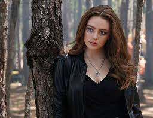
Danielle Rose Russell as Hope Mikaelson (season 5): The teenage daughter of Klaus and Hayley, who is an extremely powerful supernatural being as she holds the three-fold lineage of vampire, werewolf and witch. Following the conclusion of The Originals, Russell stars in the spin-off Legacies, based on Hope's adventures at the Salvatore Boarding House for the Young and Gifted – a school set up by Alaric and Caroline at the end of The Vampire Diaries
 Young Hope is portrayed by Summer Fontana (recurring season 4, guest season 5).
Young Hope is portrayed by Summer Fontana (recurring season 4, guest season 5).
 Baby Hope is portrayed by uncredited infant actors in seasons 1–3.
Baby Hope is portrayed by uncredited infant actors in seasons 1–3.
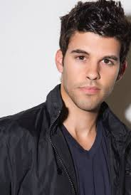
Steven Krueger as Josh Rosza (season 5; recurring seasons 1–4): A visitor to New Orleans who is soon turned into a vampire by Marcel. He befriends Davina and later serves as Marcel's lieutenant. He enters a relationship with Aiden, a werewolf who is murdered by Dahlia to frame Klaus in season 2. In season 5, he is injected with advanced werewolf venom into the heart and dies not long after in Marcel's arms. He then reunites with his dead boyfriend Aiden in the afterlife. The character is introduced in The Originals.